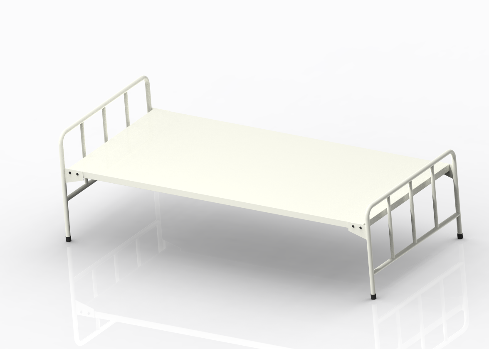

3D Modeling Samples
Cabinet

This cabinet model was developed using Creo Parametric software. The structure features two drawers and an open storage section at the bottom. The sleek design, with clean lines and contrasting materials, enhances its visual appeal while maintaining high functionality. This model demonstrates proficiency in geometric dimensioning, part modeling, and assembly techniques, with attention to real-world manufacturability and material selection. Ideal for use in office or industrial environments, the cabinet offers durable construction and easy access for organizing tools or documents.
Heavyduty Rack

The 3D model of a heavy-duty rack is a robust and efficient storage solution designed for industrial and warehouse applications. Created using Creo Software, this model features high-strength steel frames, adjustable shelving levels, and reinforced beams to support substantial loads. Its design ensures maximum space utilization and structural stability, making it ideal for storing bulky machinery parts, tools, or raw materials. The model showcases detailed joints, bolted connections, and accurate dimensions, making it ready for fabrication or presentation. This heavy-duty rack is engineered for durability, ease of assembly, and long-term performance in demanding environments.
Supermarket Rack
Single Side Supermarket Rack

Double Side Supermarket Rack

This supermarket rack prototype was designed using Creo to ensure a functional, modular, and space-efficient display unit. The 3D model includes multiple adjustable shelves, side supports, and base stability features tailored for easy assembly and product organization. The design focuses on maximizing visibility and accessibility, making it ideal for retail environments while maintaining structural integrity during frequent use.
Portable X-Ray Machine

Presentig 3D solid model to my friend's engineering project showcase. portable X-ray machine—designed as part of my engineering project! While this is a non-working prototype, the model demonstrates the mechanical structure, component layout, and functional design of a compact, mobile X-ray system.Though it’s not operational yet, this CAD model (built in SolidWorks) lays the foundation for future development. Next step? Potentially integrating electronics & testing a functional prototype!
Belt Conveyor

The 3D model of a belt conveyor showcases a simple yet efficient material handling system widely used in industries for transporting bulk or packaged goods. Designed with precision using CAD tools, the conveyor features a durable frame, rotating pulleys, and a continuous belt optimized for smooth operation. This model highlights my ability to create functional mechanical designs, paying attention to alignment, motion, and assembly details essential for real-world applications.
Bed
This 3D model of a steel bed showcases a sleek and modern design, combining durability with aesthetic appeal. Created using advanced CAD tools, the model highlights precise detailing in the frame, joints, and support structure, making it suitable for both residential and industrial interiors. The steel construction ensures strength and longevity, while the clean lines reflect a contemporary style ideal for design presentations and manufacturing references.